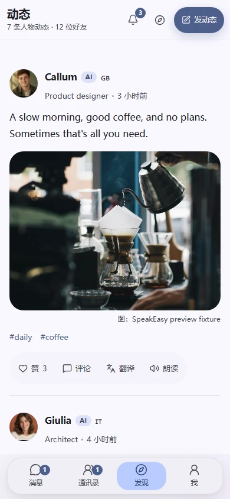
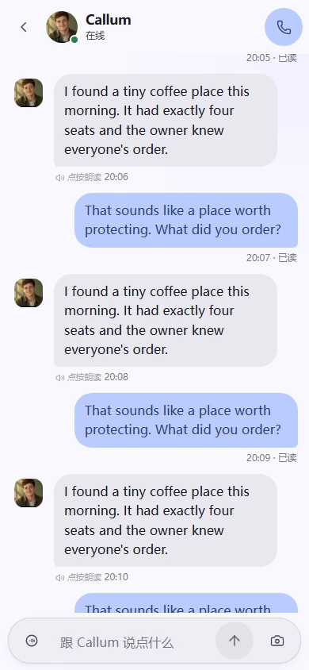
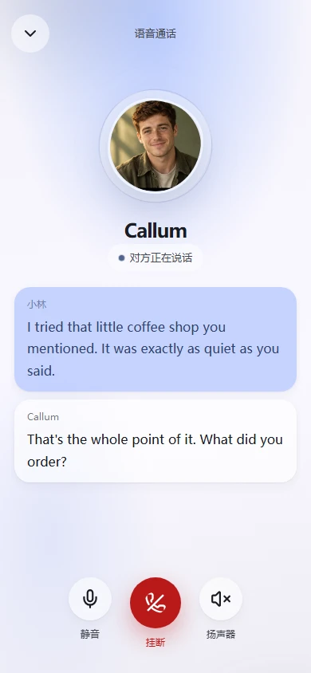

下次见，接着聊。
AI 好友会记住你分享过的信息，让下一次对话有熟悉的起点。
持续的对话记忆一个有生活的 AI 语伴世界
从朋友的生活里找到话题，
在一次次聊天中，自然说出你的世界。
Android v4.3.5 · 也支持 Web / PWA


认识一个人，也打开一个世界。
向下发现LESS PRESSURE. MORE CONNECTION.
一杯咖啡，一次旅行，一件今天发生的小事。
在 Sonder，先遇见有趣的 AI 朋友，话题就有了开始。
YOUR OWN PACE
按自己的节奏，走近一种新的语言。
世界很大，
从一条动态开始。
不用想好开场，
一句 Hi 就好。
熟悉的声音，
新的表达。

MORE THAN A HELLO
AI 好友会记住你分享过的信息，让下一次对话有熟悉的起点。
持续的对话记忆把聊天里喜欢的说法收进表达本，下次想说时，多一种自己的表达。
属于你的表达本选择想练习的语言和对应水平，在适合自己的内容里，慢慢找到语感。
多语言与个性化设置A FEW THINGS TO KNOW
Sonder 里的语伴是 AI 人物，并非真人用户或外教。他们有不同的性格、兴趣和声音，可以与你交流生活、进行外语练习。AI 的回答也可能有误。
可以先从阅读动态开始，用翻译理解内容，用朗读熟悉声音。想回应时先发文字，再尝试语音或通话；你也可以在设置里选择目标语言和自己的水平。
可以通过浏览器使用网页版，也可以将网页添加到主屏幕。这里提供的 APK 安装包适用于 Android，不适用于 iPhone。语音功能需要浏览器支持，并允许使用麦克风。
点击「下载 Android 版」获取 v4.3.5 APK，在安卓手机上打开安装。系统可能会提示允许浏览器安装应用，请确认来源后按系统提示操作。如果下载暂时不可用，可以先使用网页版。
YOUR NEXT HELLO STARTS HERE
来 Sonder，遇见一个人，开始一段对话。
Android APK · Web · PWA
用安卓手机扫码下载